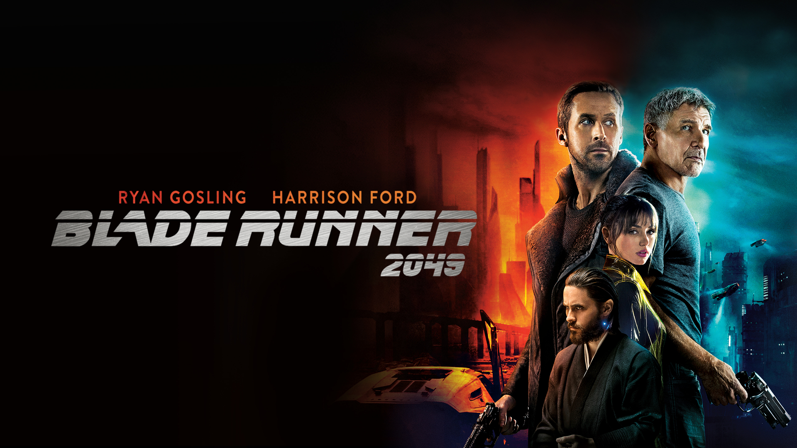
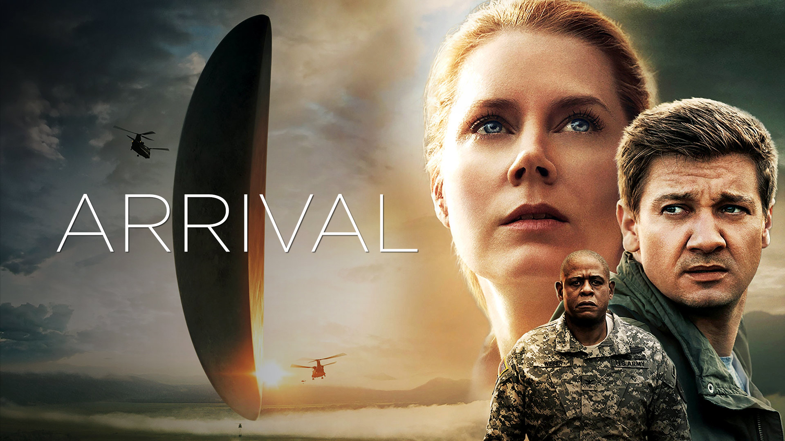
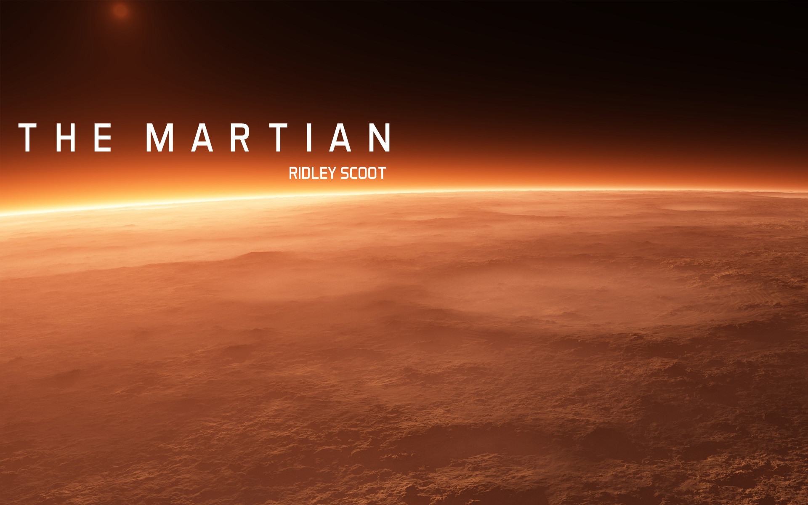
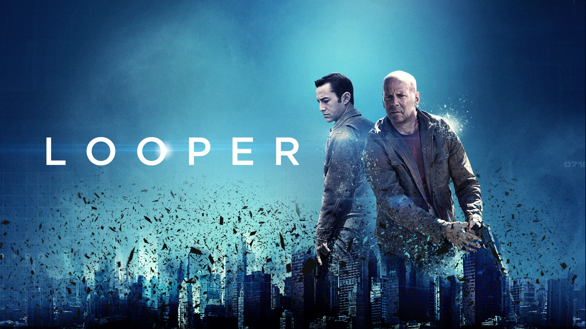
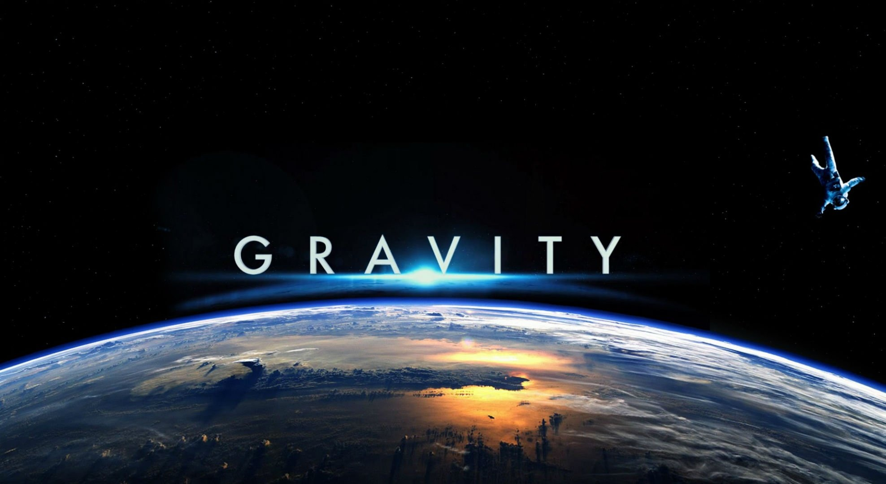

Science fiction cinema has seen a renaissance in the 21st century, with filmmakers pushing the boundaries of imagination and technology to deliver mind-bending narratives. For all the sci-fi enthusiasts out there, we've curated a list of the top 08 must-watch movies released after 2010 that will take you on thrilling journeys through futuristic landscapes, alternative realities, and existential dilemmas.
⇨ Inception (2010)

"Inception," directed by the visionary Christopher Nolan, is a mind-bending journey into the depths of the human subconscious. The film immerses us in a world where skilled thieves infiltrate people's dreams to steal their most valuable secrets. At the heart of the story is Dom Cobb (played by the exceptional Leonardo DiCaprio), a troubled protagonist haunted by his own memories. The film introduces us to a concept within a concept within a dream, blurring the lines between reality and imagination. It challenges us to ponder the nature of reality and the power of our subconscious minds.
Nolan's storytelling prowess shines in "Inception." He weaves a complex narrative that keeps you guessing until the very end. The visual effects are nothing short of groundbreaking, particularly the iconic scenes of folding cityscapes and zero-gravity corridors. Hans Zimmer's haunting score adds an extra layer of intensity to this cerebral adventure. "Inception" is a sci-fi masterpiece that explores the fragility of memory, the depths of the human psyche, and the consequences of playing with dreams. It's a film that leaves a lasting impression, inviting you to revisit it time and time again.
⇨ Blade Runner 2049 (2017)

Denis Villeneuve's "Blade Runner 2049" is a breathtaking sequel to the 1982 classic. The film transports us back to the dystopian, neon-soaked world created by Ridley Scott, but with a fresh perspective. Ryan Gosling delivers a mesmerizing performance as K, a new generation blade runner on a mission to unearth a long-buried secret. The film retains the noir aesthetics and existential questions that made the original a cult classic.
What sets "Blade Runner 2049" apart is its stunning visuals. Cinematographer Roger Deakins' work is nothing short of a visual feast, earning him a long-overdue Academy Award. The film immerses us in a future that feels both familiar and foreign, a world where the line between humans and replicants blurs. The haunting soundtrack, composed by Hans Zimmer and Benjamin Wallfisch, pays homage to Vangelis' iconic score.
"Blade Runner 2049" captures the essence of the original while offering a fresh take on the themes of identity, humanity, and the consequences of playing god. It's a film that demands contemplation, offering a feast for the eyes and the intellect.
⇨ Interstellar (2014)

Christopher Nolan's "Interstellar" is a grandiose space odyssey that takes us on a journey through the cosmos and the mysteries of time. The film explores humanity's struggle for survival as Earth faces an ecological catastrophe. Matthew McConaughey leads a crew of explorers who venture through a wormhole in search of a new habitable planet for humanity.
The movie is a visual masterpiece, featuring awe-inspiring depictions of distant planets, wormholes, and black holes. It's a testament to Nolan's commitment to practical effects, with a minimal use of CGI, creating a sense of realism in this space epic. Hans Zimmer's score adds emotional depth to the film, making it a sensory experience.
What sets "Interstellar" apart is its emphasis on human connection, love, and the exploration of the unknown. It delves into the complexities of relativity, time dilation, and the concept of love transcending the boundaries of space and time. The film's intricate plot and philosophical themes make it a must-watch for sci-fi enthusiasts and anyone intrigued by the mysteries of the universe.
⇨ Ex Machina (2014)
"Ex Machina," directed by Alex Garland, is a thought-provoking exploration of artificial intelligence, consciousness, and human nature. The film revolves around a young programmer, Caleb (Domhnall Gleeson), who wins the chance to participate in a groundbreaking experiment involving an intelligent humanoid robot, Ava (Alicia Vikander).
The strength of "Ex Machina" lies in its character-driven narrative and philosophical depth. The film raises profound questions about the nature of consciousness and the ethics of creating sentient beings. It also delves into the concept of the Turing test, where a machine's ability to exhibit human-like intelligence is assessed. The dynamic between Caleb, Ava, and the enigmatic creator, Nathan (Oscar Isaac), is a captivating centerpiece of the story.
Visually, "Ex Machina" is striking in its minimalistic design, emphasizing the contrast between the cold, sterile environment and Ava's uncanny humanity. The film's subdued yet unsettling atmosphere creates an eerie sense of unease, echoing the moral dilemmas it poses. Alicia Vikander's performance as Ava is both haunting and brilliant, leaving the audience in contemplation long after the credits roll. "Ex Machina" is a modern classic that challenges our perceptions of artificial intelligence and its implications for the future.
⇨ Arrival (2016)

"Arrival," directed by Denis Villeneuve, is a masterful sci-fi film that explores the complexities of communication, time, and the human condition in the face of alien contact. Amy Adams delivers a captivating performance as Dr. Louise Banks, a linguist recruited to decipher the language of extraterrestrial visitors.
What sets "Arrival" apart is its emphasis on linguistic theory and the idea that language shapes our perception of reality. The film beautifully depicts the process of deciphering an entirely alien language, creating a sense of wonder and intellectual engagement. The nonlinear storytelling and unexpected plot twists keep the audience on the edge of their seats while challenging their assumptions about time and destiny.
Visually, "Arrival" is a work of art. The alien spacecraft, shrouded in a mysterious mist, is a captivating sight, and Bradford Young's cinematography offers a hauntingly beautiful backdrop for the narrative. Jóhann Jóhannsson's ethereal score complements the film's atmosphere, drawing the audience deeper into the emotional and philosophical journey.
"Arrival" is not just a sci-fi movie; it's a poignant exploration of the power of language, empathy, and the choices that define us as humans. It's a thought-provoking film that lingers in the mind, inviting viewers to contemplate the nature of time, the significance of our choices, and the possibility of communication beyond our world.
⇨ The Martian (2015)

Ridley Scott's "The Martian" is a thrilling and scientifically accurate survival story set on the desolate surface of Mars. Matt Damon shines as Mark Watney, an astronaut who becomes stranded on the Red Planet during a mission, presumed dead by his crew.
What makes "The Martian" exceptional is its commitment to scientific realism. The film meticulously explores the challenges of survival in a hostile environment, showcasing Watney's ingenuity and determination as he fights for his life. The script, adapted from Andy Weir's novel, is witty, filled with humor, and often awe-inspiring. It presents a vivid portrayal of human adaptability in the face of adversity.
Visually, "The Martian" captures the desolation of Mars while also highlighting the beauty of the Martian landscape. The film's supporting cast, including Jessica Chastain, Chiwetel Ejiofor, and Jeff Daniels, delivers strong performances, making the characters feel genuine and relatable.
Hans Zimmer's score adds to the film's emotional depth, evoking a sense of hope and resilience. "The Martian" is a gripping and heartwarming tale of one man's survival, a celebration of human determination and the enduring spirit of exploration.
⇨ Looper (2012)

"Looper," directed by Rian Johnson, is a thought-provoking time-travel thriller with a unique twist. Joseph Gordon-Levitt plays Joe, a "looper," a contract killer who eliminates targets sent back in time from the future. However, his world is turned upside down when he encounters an older version of himself, played by Bruce Willis.
What sets "Looper" apart is its engaging exploration of the implications of time travel and the choices we make in life. The film is equal parts action-packed and contemplative, blending gritty urban environments with futuristic elements seamlessly. The characters, particularly Joe and his older self, are complex and flawed, and their interactions drive the narrative.
Visually, "Looper" offers a striking contrast between the dystopian future and the past. The film's concept of time travel is cleverly executed, avoiding many of the paradoxes often associated with the genre. The narrative keeps the audience guessing as it unfolds, with Johnson's storytelling finesse shining through.
"Looper" is a gripping and inventive sci-fi film that challenges our assumptions about time, identity, and the consequences of our actions. It's a thrilling ride that leaves you pondering the choices that shape your destiny.
⇨ Gravity (2013)

Alfonso Cuarón's "Gravity" is a visually mesmerizing and emotionally intense space thriller. The film follows astronauts Dr. Ryan Stone (Sandra Bullock) and Lieutenant Matt Kowalski (George Clooney) as they become stranded in space after a catastrophic accident.
"Gravity" stands out for its stunning cinematography and the sense of immersion it provides. The film's use of long, unbroken takes creates a feeling of weightlessness, drawing the audience into the harrowing experience of the characters. The 3D effects are masterfully integrated, enhancing the sense of depth and tension.
Sandra Bullock's performance is a tour de force, as she navigates the emotional journey of a character facing life-or-death situations in the unforgiving vacuum of space. George Clooney provides much-needed levity and wisdom as the veteran astronaut.
The film's score, composed by Steven Price, complements the visual spectacle, intensifying the emotional impact of the story. "Gravity" is a visceral and heart-pounding experience that captures the isolation and fragility of the human condition in the vast expanse of space.